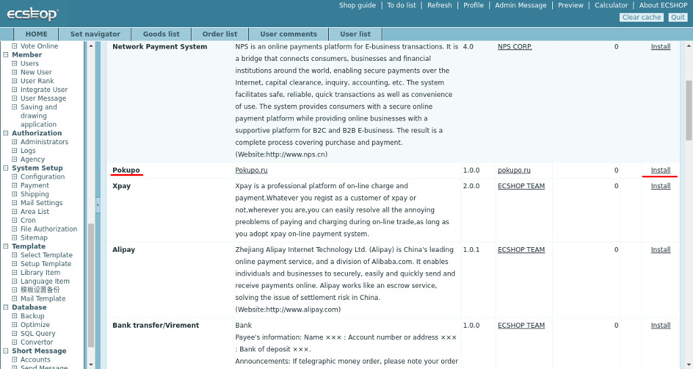
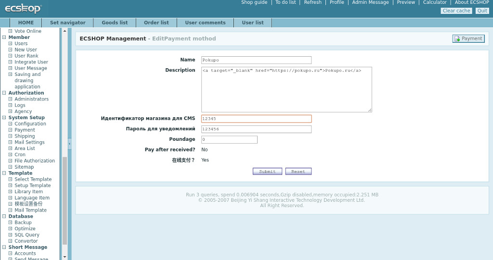
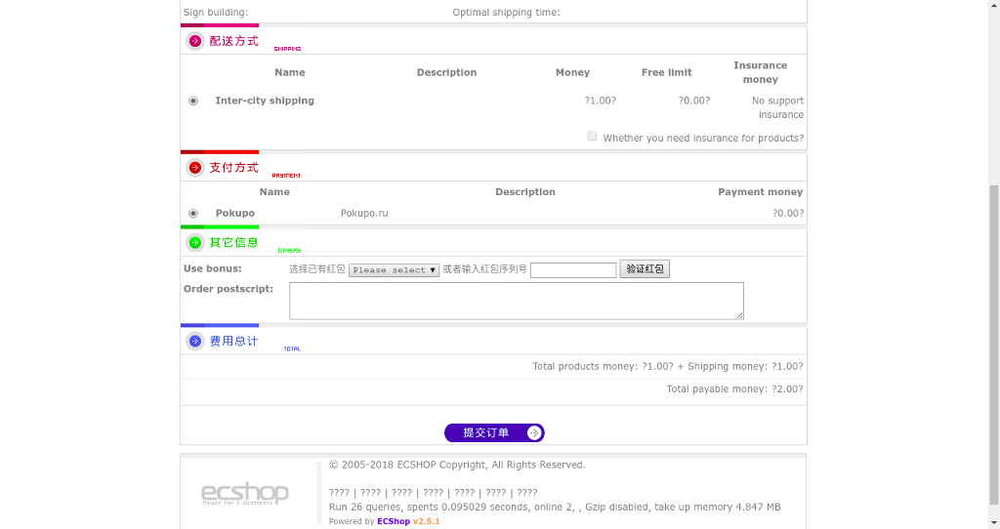

1. Using ftp or any other method, copy the /includes/modules/payment/pokupo.php file from the archive to a similar CMS directory
2. If you made a fresh installation of ECSHOP, you can simply copy the file respond.php from the archive to the CMS root directory; if you already have a customized system, you can simply add the fragment responsible for the work of the module from the attached respond.php file to the existing one. The required fragment is highlighted with comments.
3. Go to the System Setup / Payment section. Find the Pokupo module in the list of available payment modules and click Install
4. Specify in the "Shop ID for CMS" settings of your store in the Pokupo system. You can find this ID in the control panel of the seller https://dashboard.pokupo.ru Also specify the password for notifications.

5. Next, you need to set "Url for notifications" in the settings of the store (dashboard-> shops-> settings-> notifications)
Example: http://mysite.com/respond.php?code=pokupo
Here you also need to enter the password for notifications that you set up in the previous step when installing the module in the ECSHOP admin panel. Also, set the site notification method. It is recommended to select the POST mode.
6. And this is the end of configuration process. In the future, when placing an order, the user will be offered a Pokupo payment method, choosing which, he will be redirected at Pokupo merchant to pay for the order.
